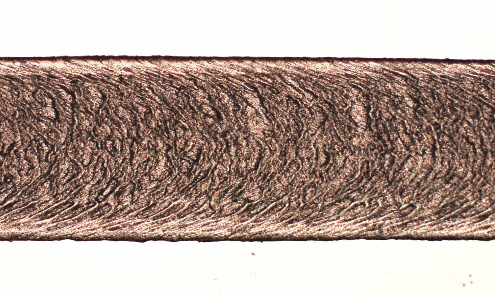
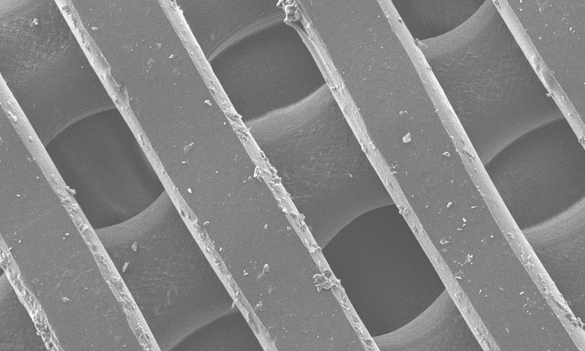
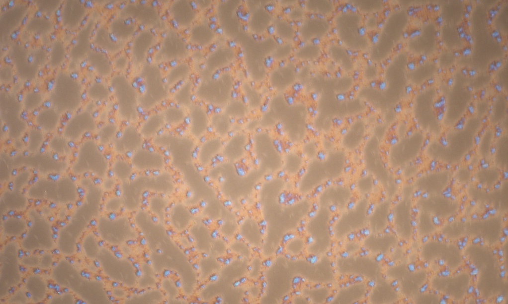
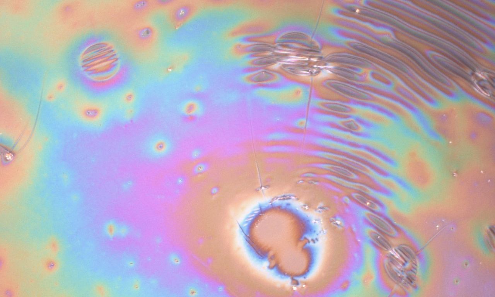
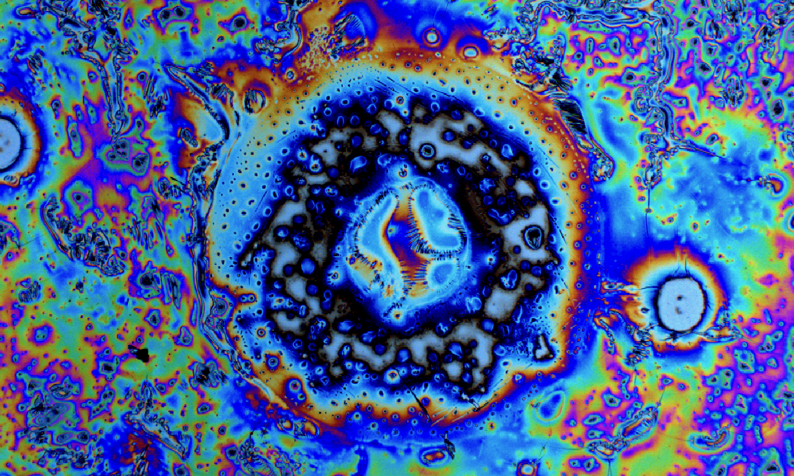

|

|
Zach SwainPhD |
|

|

|








Research Updates
Experimentally validated mechanistic surface abrasion and time-dependent mechanotactile response of aminosilane monolayers under repeated wear | |
Collaborated with department professor of undergraduate program to provide equipment access for undergraduate research training | |
Assigned responsibility to supervise progress of undergraduate research project and training | |
Final edits of first author manuscript on monolayer surface coatings to control interfacial friction and percepts from everyday items via surface chemistry | |
Submitted first author manuscript for publication titled "Self-assembled thin films as alternative surface textures in assistive aids with users who are blind" | |
Assigned to lead efforts for $5M grant to efficiently accelerate innovation in laboratory research and translational technology development for consumer-ready products in underserved and emerging markets | |
Winner of 2024 Art in Materials award | |
First author publication accepted in RSC Journal of Materials Chemistry B titled "Self-assembled thin films as alternative surface textures in assistive aids with users who are blind" | |
Completed and passed PhD Data Defense to thesis committee, given Dec. '24 graduation date | |
Began investigating block copolymer thin films with controlled microphase-separated morphologies for tunable friction instabilities over chemically distinct nanopatterned domains | |
Published paper and work featured as journal issue cover image in ACS Applied Polymer Materials, Naqi et al. "Dual Material Fused Filament Fabrication via Core–Shell Die Design" | |
Trained to work in a Class 100 cleanroom for lithography, deposition, etch, and characterization | |
Trained for protection of human subjects for biomedical testing and research | |
Began investigating silane surface coating for tactile distinction in blind and low-vision populations | |
Operated human subject study at National Federation of the Blind in Baltimore, MD for improvement of tactile aids for blind and low-vision populations | |
Trained for X-ray Photoelectron Spectroscopy (XPS) characterization of materials surfaces | |
Work presented at Science of Adhesion 2023 Gordon Research Conference | |
Demonstrated repeatable, spatially controlled microphase-separation in block copolymer thin films for tunable friction instabilities at the interface | |
Selected to join the inaugural Innovation Delaware (InDE) Fellows with 100% scholarship award from US Small Business Administration, UD College of Engineering, and Delaware BioScience Association | |
Submission of manuscript to ACS Polymers Au entitled "One pot photo-mediated formation of electrically-conductive hydrogels" | |
Successfully initiated addition of publication and authorship policy instituted by UD College of Engineering | |
Initiated collaboration with San Francisco LightHouse for the Blind onto grant funding development, application, and testing of smooth surface materials which give rise to distinct tactile percepts | |
Published paper in ACS Polymers Au, Nguyen et al. "One Pot Photomediated Formation of Electrically Conductive Hydrogels" | |
{kind=link}
Worked with Cincinnati Inc. to additively manufacture a large complex cooling frame with multiple materials at their request | |
Began work for Center for Plastics Innovation (CPI) DOE Energy Frontier Research Center to rheologically characterize and analyze newly developed polyolefin-like polyesters, in collaboration with Dr. Stuart Rowan at University of Chicago | |
Proposed method of upcycling and subsequent microwave-assisted catalytic deconstruction of polyolefins to recapture valuable small molecule products from polyolefin waste | |
Successfully demonstrated 3D printing of sulfur-based terpolymer with novel FFF extrusion system, in collaboration with Dr. Pyun at University of Arizona | |
Thermally characterized and analyzed newly developed polyolefin-like polyesters via differential scanning calorimetry (DSC) for CPI, in collaboration with Dr. Stuart Rowan at University of Chicago | |
Presented at CPI monthly meeting on the polyolefin-like polyester material's rheometry and DSC analyses and on progress of upcycling and microwave-assisted catalytic deconstruction of polyolefins | |
Developed full project plan and timeline for upcycling and microwave-assisted catalytic deconstruction of polyolefins for CPI, in collaboration with Maida Mahmood at University of Delaware | |
Began developing equipment to allow in-line polymer melt catalytic deconstruction for recapture of valuable small molecule products for CPI, in collaboration with Dr. Dion Vlachos at University of Delaware | |
Passed Ph.D. Qualifying Examination and entered into Doctoral Candidacy | |
Began design and development of novel FFF extrusion system | |
Successfully demonstrated FFF additive manufacturing of liquid crystal polymer | |
Received and executed urgent request from UD athletic training for ankle-foot orthotic (AFO) scanned and custom-printed for newly injured UD Football player prior to playoff game, in collaboration with Brandon DeSantis at University of Delaware. | |
Completed final academic course of UD MSEG PhD curriculum and enter into Doctoral Sustaining status | |
Took delivery of Cincinnati Inc. MAAM cubic meter FFF printer, became lead research engineer for this equipment at UD Center for Composite Materials | |
Additively manufactured life-size human torso shell, and develop experimental setup to deliver select quantities of saline through the shell to specified areas in order to test apparel wicking performance, in collaboration with Dr. Adriana Gorea at University of Delaware | |
Developed and additively manufactured force sensor plates for use within prosthetics testing, in collaboration with Dr. Jill Higginson at University of Delaware | |
Manufactured several carbon fiber laminate hand guards by custom fitting laminate to 3d scan of UD Football players' hands for protection of previous injuries, in collaboration with Brandon DeSantis at University of Delaware | |
Interviewed 22 industry experts from these institutions for ~30 min each on select future possibilities of desktop/medium-scale FFF additive manufacturing | |
Accepted TA position for MSEG201 - Introduction to Materials Science for the 2021 Fall Semester | |
Conference presentation abstract accepted for Society of Rheology 92nd Annual Meeting (Oct. 2021) | |
Successfully extruded tensile samples of Covalent Adaptable Network (CAN) polymer with varied wt% glass particles | |
Presented research results at UD MSEG Dept Symposium as student speaker | |
Delivered conference presentation at Society of Rheology 92nd Annual Meeting titled, "Extrudate instabilities in fused filament fabrication additive manufacturing" | |
Successfully demonstrated processing of elastomer in desktop-scale novel FFF extruder system | |
Began work for Center for Plastics Innovation (CPI) DOE Energy Frontier Research Center |
{kind=link}
Developed and manufactured variable interval pellet feed mechanism and hopper to address unique feed conditions of the previously developed novel FFF extruder system | |
Designed and developed coaxial coextruder for fused filament fabrication (FFF) additive manufacturing (AM) to 3D print with a multi-material composite extrudate in order to manufacture parts with unique material capabilities | |
Utilized previously developed novel FFF extruder system to 3D print highly filled polymers | |
Published paper in Additive Manufacturing, Phan et al. "Computational Fluid Dynamics Simulation of the Melting Process in the Fused Filament Fabrication Additive Manufacturing Technique" | |
Given unique access to the University of Delaware in order to operate campus 3D printers to manufacture face shield personal protective equipment (PPE) for local healthcare workers. More than 3,700 face shield frames were printed, fitted with transparency sheets, and distributed to six local & regional hospitals as well as local nursing homes within a two week period | |
Additional funding received from Army Research Laboratory | |
Leveraged foundational research to develop optimized scale-up of the fused filament fabrication (FFF) additive manufacturing (AM) process for manufacture of stronger parts on larger scales and at faster production rates | |
Developed methods of mitigating 3D printing extrusion instabilities brought about by small flow rates created from high pressures: sharkskin, melt fracture, die lines, and die swell are all observed in desktop 3D printers - abating the onset of these phenomena will produce better additively manufactured parts | |
Demonstrated novel operation of previously developed FFF extruder system | |
Experimentally validated of in-process FFF coextrusion for 3D printing of multi-material composite extrudate in a core/shell cross-section | |
Began developing written portion of Ph.D. Qualifying Examination | |
Demonstrated FFF extrusion of Covalent Adaptable Network (CAN) polymer with novel FFF extruder system |
Gave first on-site presentation of research at the Army Research Laboratory at Aberdeen Proving Ground | |
Demonstrated fused filament fabrication (FFF) of exotic polymers via utilization of previously developed FFF extruder system | |
Identified recirculating melt seal in computational fluid dynamics modeling of the Stefan melting process in fused filament fabrication (FFF), which provides pressurization in the plasticating hot end | |
Graduated with a Bachelor's Degree in Mechanical Engineering from University of Delaware with Concentration in Aerospace Engineering and a Minor in Mathematics | |
Funding received from Chemours | |
Investigated fluoropolymer processing aid in additive manufacturing to promote wall slip and allow for faster extrusion rates | |
Produced crystalline 3D printed parts (typically amorphous due to fast quenching rates upon deposition) by utilizing talc-filled polylactic acid (PLA) composite as a nucleating agent to promote crystallization kinetics | |
Began graduate studies in Materials Science and Engineering at University of Delaware | |
Published paper in IMA Journal of Applied Mathematics: Edwards et al. "Maximal 3D printing extrusion rates" |
Blended deuterated and protonated polystyrene and manufacture into filament to 3D print, utilize small angle neutron scattering (SANS) to determine radius of gyration and degree of orientation | |
Published paper in AIP SOR Journal of Rheology: Phan et al. "Rheological and heat transfer effects in fused filament fabrication" | |
Developed novel fused filament fabrication (FFF) extruder system for additive manufacturing (AM) from bulk pellet feedstock | |
Advised Brookhaven National Laboratory researchers on additive manufacturing technology |
Published first paper, accepted in AIP SOR Journal of Rheology: Mackay et al. "The performance of the hot end in a plasticating 3D printer" (top 3 most read paper in Journal of Rheology 2017)
Funding received from National Science Foundation 3D printed strain-activated filter membranes in time-gradient fluid filtration to allow for time-varied filtration of select size particles within a fluid flow Funding received from Army Research Laboratory Began investigating optimization of diffusion-sourced extrudate weld strength and flow-induced molecular orientation in Fused Filament Fabrication (FFF) Additive Manufacturing (AM) to produce tougher 3D printed parts |
Measured die-dependent volumetric flow rates of acrylonitrile butadiene styrene (ABS) and polylactic acid (PLA), and identification of heat-transfer-limited maximum processing rates in fused filament fabrication (FFF) additive manufacturing (AM) | |
Contracted work with Procter & Gamble to 3D print T-Lyne (DuPont Surlyn ionomer) to make watertight blocks containing microfluidic channels | |
3D printed Bismuth solders to create additively manufactured, low-melt, conductive, metal parts | |
Actively measured the power and current supplied to the extruder's motor - over a range of operating rates - to couple with volumetric flow rate measurements in order to calculate the pressure drop in the hot end of a 3D printer |
Began undergraduate studies in Mechanical Engineering at University of Delaware | |
Began undergraduate research in Materials Science and Engineering at University of Delaware | |
Funding received from National Institute of Standards and Technology through the Center for Neutron Science | |
Began investigating insulated conductive filament and extrudate in Fused Filament Fabrication (FFF) of copper filled polyethylene to additively manufacture insulated electrical wiring within a 3D printed part |